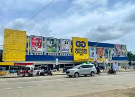
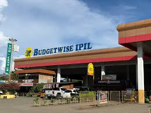
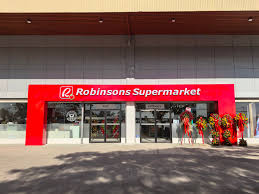

Overview
Shopping tourism in Zamboanga Sibugay offers a unique blend of modern convenience and traditional market charm. From bustling night markets to seaside trading posts, visitors can find everything from high-quality local handicrafts to the freshest seafood in the region.
It is an opportunity to support local artisans and bring home a piece of Sibugaynon culture, whether it's through native delicacies or unique souvenirs.
Top Shopping Destinations
Gaisano Grand Mall Ipil

As the largest modern retail center in the province, Gaisano Capital Ipil offers a complete mall experience. From a well-stocked supermarket and department store to various dining outlets and specialty shops, it is the primary destination for travelers looking for air-conditioned comfort and a wide selection of national and international brands.
Budgetwise Ipil

Conveniently located along the national highway, Budgetwise Ipil is one of the most recognizable modern retail hubs in Zamboanga Sibugay. This multi-story establishment offers a comprehensive shopping experience, featuring a well-organized supermarket, a diverse department store for apparel and home goods, and various essential services. It is a favorite destination for tourists looking for quality items and a streamlined, one-stop shopping environment in the heart of the capital.
Robinsons Supermarket Ipil

As a premier retail anchor within the Gaisano Capital Ipil complex, Robinsons Supermarket offers a modern and high-quality shopping experience. Known for its wide selection of fresh produce, international grocery items, and wellness products, it is the go-to destination for travelers seeking a clean, organized, and air-conditioned environment. Whether you are stocking up for a road trip or looking for specific premium brands, this supermarket provides the most comprehensive retail service in Zamboanga Sibugay.